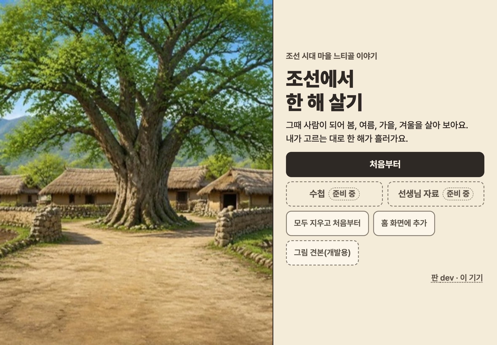
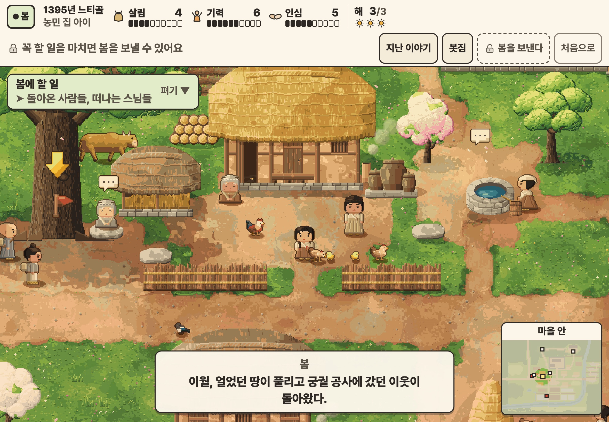
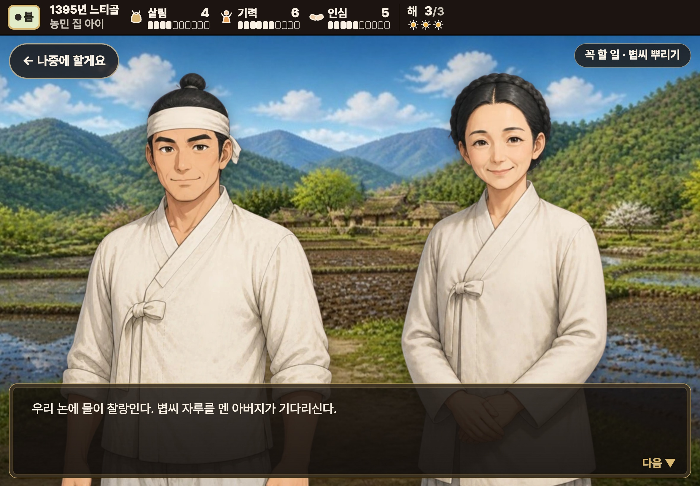
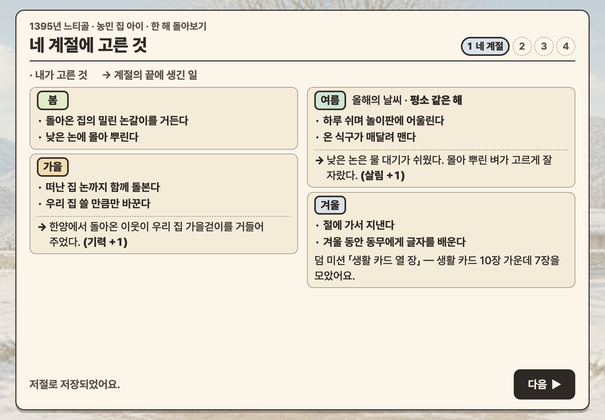

조선에서 한 해 살기 · 디자인 시안 셋 가운데 B · 2026년 11월
B 단청 그림책“5학년이 손가락으로 누르고 싶어지는, 오방색 그림책 같은 느티골.”
주 단추 색
셋을 한 장에 견주기
스타일
주 에디토리얼·헤리티지(한지, 먹 글자, 단청 선, 번호 붙은 그림) / 보조 산뜻·친근(말랑한 점토 단추, 젤리 막대, 칭찬 한 줄)
빛
왼쪽 위의 해 하나(제목 그림의 해 뜨는 쪽). 윗면 흰 빛 + 아래 두꺼운 그림자, 흐르는 빛은 주 단추에만.
그림
대화는 지금의 반실사 채색화, 맵은 지금의 도트. 새로 더한 것은 16칸 도트 아이콘(맵과 UI를 잇는다), 단청 띠, 계절 도장, 붓줄 하나.
고친 곳
제목 · 맵 · 대화(+고르기) · 한 해 돌아보기 · 부품과 상태. 게임 코드는 그대로다.
한지 #f6efe1 바탕먹 #2b241d 13.4:1주홍 #c4462a 주 단추뇌록 #1f7d74 이름 리본황 #e9ad2a 해·막대청 #2f5f9e 초점 테
제목·단추·이름표 — Jua
조선에서 한 해 살기
이야기 글(대사·고른 것) — Gowun Batang
냇가 낮은 논은 물 대기가 쉬워 벼가 잘된다.
정보·숫자 — Pretendard
살림 4 · 기력 6 · 인심 5 · 해 3/3
그림 1 · 메인
제목
이른 아침의 느티골 그림을 화면 가득. 비어 있는 하늘에 둥근 제목, 그림의 해가 빛의 자리.
“이어 하기”(주 단추 색, 하던 이야기 한 줄)와 “처음부터”를 엄지가 닿는 왼쪽 아래에.
“수첩”·“선생님 자료”는 위 오른쪽에 작은 잠긴 스티커로 모았다. 개발용 단추는 뺐다.

지금
그림 2 · 세부 1
맵
위 띠: 위 줄은 알약(계절 · 곳과 역할 · 수치 셋 · 해), 아래 줄은 안내와 단추 넷. 아래에 단청 띠.
살림·기력·인심·해와 단추에 16칸 도트 아이콘 — 맵의 도트와 UI가 한 판이 된다. 수치는 눈금 있는 젤리 막대.
할 일 쪽지는 둥근 한지 카드에 체크 칸. 화살표가 가리키는 줄이 가장 밝다(황 테).

지금
그림 3 · 세부 2
대화
띠가 검게 바뀌지 않는다: 맵과 같은 한지 띠의 위 줄만 남는다.
대사 창은 둥근 말풍선, 꼬리가 말하는 사람을 가리키고 이름은 단청 리본에.
“다음 ▼” 옆에 손가락 + “아무 곳이나 눌러요 · → · Space”(첫 몇 창만). 일의 표시는 띠에 매달린 책갈피.

지금
그림 3-2 · 세부 2
대화 — 고르기
선택지는 큰 점토 카드 둘, 앞에 빈 동그라미(고르면 주 단추 색의 점이 찬다). 두 사람은 양옆으로 비켜선다.
고르는 동안 말풍선에는 마지막 말이 남고, 손가락 안내는 없다(눌러도 넘어가지 않으므로).
그림 4 · 세부 3
한 해 돌아보기
머리에 칭찬 한 줄 “한 해를 끝까지 살았어요”(지금 게임의 말)와 황 붓줄. 네 장의 길은 점선 위의 동그라미.
네 계절이 왼쪽에서 오른쪽으로 걸어온 길: 칸마다 그 계절의 채색화 한 조각과 계절 색 도장.
계절 끝에 생긴 일은 계절 빛 바탕에 “→”와 수치 알약(도트 아이콘 + 살림 +1). 덤 미션은 7/10 젤리 막대.

지금
그림 5 · 견본
부품과 상태
단추의 기본·누름·초점·잠김·풀림, 접힌 쪽지와 해낸 줄, 이야기 줄과 잠긴 선택지, 계절 칩·도장·해·젤리 막대.
화면은 1180×820(태블릿 가로) 틀이다. 1024×768에서도 같은 짜임으로 줄어든다(rem). 움직임: 주 단추의 반짝 빛(7.5초에 한 번), 손가락 끝의 물결, “다음 ▼”의 까딱임 — 움직임 줄이기 설정이면 모두 멈춘다. 자세한 토큰과 게임에 넣을 때 바꿀 파일은
DESIGN.md .